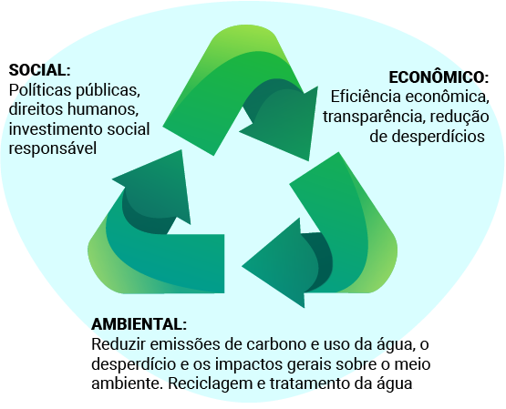

Nos módulos anteriores, estudamos o passado e o presente. Pensar no futuro é considerar as possibilidades a partir do que já vivemos e do que estamos vivendo. Quando falamos do futuro do planeta Terra, há uma preocupação em saber se ele será habitável pelo ser humano nas próximas centenas de anos. Queremos que as próximas gerações possam viver em um mundo com disponibilidade de recursos, alimentos seguros e condições climáticas mais estáveis. Mas, para isso acontecer, é necessário avaliar como o mundo em que vivemos hoje pode garantir a existência de futuras gerações.
Pensando nisso, em 2015, a Organização das Nações Unidas (ONU) elaborou os Objetivos de Desenvolvimento Sustentável (ODS). Os ODS são um conjunto de 17 metas como parte da Agenda 2030 para o desenvolvimento sustentável. Embora as metas se relacionem com o futuro, elas têm impacto no presente. Questões como pobreza, fome, saúde, educação e igualdade de gênero se articulam com o nosso presente, pois a desigualdade social já ameaça o desenvolvimento sustentável global. Diminuir as injustiças que acontecem hoje é um meio para garantir que o futuro seja melhor e menos incerto.
Os ODS têm o propósito de orientar os esforços globais de desenvolvimento sustentável até 2030, abordando os principais desafios ambientais, sociais e econômicos enfrentados pelo mundo. Esses 17 objetivos são expectativas e metas de uma sociedade global preocupada tanto com a sustentabilidade quanto com os direitos humanos. Confira os objetivos na figura a seguir.
Dezessete Objetivos de Desenvolvimento Sustentável (ODS) da Agenda 2030, da ONU. O fundo é branco e cada objetivo é representado por um ícone colorido e um texto explicativo, dentro de um quadrado, conforme a seguir: 1. Erradicação da Pobreza, 2. Fome Zero, 3. Boa Saúde e Bem-Estar, 4. Educação de Qualidade, 5. Igualdade de Gênero, 6. Água Limpa e Saneamento, 7. Energia Acessível e Limpa, 8. Emprego Digno e Crescimento Econômico, 9. Indústria, Inovação e Infraestrutura, 10. Redução das Desigualdades, 11. Cidades e Comunidades Sustentáveis, 12. Consumo e Produção Sustentáveis, 13. Combate às Alterações Climáticas, 14. Vida debaixo d’Água, 15. Vida sobre a Terra, Paz, 16. Paz, Justiça e Instituições Fortes, 17. Parcerias em Prol das Metas.
A longevidade, ou seja, a expectativa de vida e a saúde das populações, está diretamente relacionada aos ODS. A longevidade é afetada por vários fatores: acesso a cuidados de saúde e nutrição adequada, saneamento básico, habitação segura e acesso à água potável. Todas essas áreas são abordadas pelos ODS, o que significa que o sucesso na realização dessas metas pode levar a um aumento na expectativa de vida e na saúde das populações, além de um futuro melhor para nós e para as gerações futuras.
Cartão com fundo verde. Texto: “Objetivo 3: Saúde e Bem-estar". Verso do cartão: “Assegurar uma vida saudável e promover o bem-estar para todos, em todas as idades”.
O objetivo 3 dos ODS é assegurar uma vida saudável e promover o bem-estar para todas as pessoas, em todas as idades, e nas últimas décadas, o Brasil viu sua população viver cada vez mais. Esse progresso foi impulsionado por muitas iniciativas que melhoraram o acesso a cuidados médicos, saneamento básico, imunização e medicamentos.
Na década de 40, a expectativa de vida do brasileiro era de 45 anos. A expectativa de vida é uma média de anos que a população pode esperar viver, caso sejam mantidas as mesmas condições de vida no momento. Quanto maior a que um local oferece, maior é a chance de as pessoas viverem mais tempo.

Fatores que levam a expectativa de vida a ser tão baixa nos anos 40
Os fatores que aumentaram a expectativa de vida – ano 2023
A educação, a saúde, o saneamento básico e os índices de violência influenciam na expectativa de vida. Atualmente, no Brasil, a expectativa de vida é de 77 anos: 32 anos a mais do que na década de 40.
Um fator-chave para o aumento da longevidade é o acesso a serviços de saúde. O Brasil tem liderado esforços para ampliar o acesso em todo o país, além de oferecer um sistema de saúde universal e gratuito. A revolução tecnológica médica também tem desempenhado um papel importante. Aliado a isso, a medicina preventiva tem sido utilizada para incentivar a busca por cuidados antes que surjam problemas.
Texto no topo da imagem: “Expectativa de vida no Brasil chega a 76,8 anos - média é 2 meses maior que a de 2019, mas não levou em conta efeitos da pandemia - dados referentes ao ano de 2020. 1940: 45,5 anos, 1950: 48 anos, 1960: 52,5 anos, 1970: 57,6 anos, 1980: 62,5 anos, 1991: 66,9 anos, 2000: 69,8 anos, 2010: 73,9 anos, 2018: 76,3 anos, 2019:76,6 anos e 2020: 76,8 anos.
O Sistema Único de Saúde foi um marco na história da saúde brasileira. A criação do SUS foi garantida pela Constituição de 1988 e assim a disponibilidade dos serviços de saúde foi ampliada, proporcionando o acesso universal ao sistema, sem discriminação. O SUS é um dos maiores e mais complexos sistemas de saúde pública do mundo, uma conquista no acesso à saúde e na oferta de serviços muito além do atendimento hospitalar, abrangendo desde o atendimento para avaliação de pressão arterial, na Atenção Primária, até o transplante de órgãos, garantindo acesso integral, universal e gratuito a toda a população.
Logotipo do Sistema Único de Saúde (SUS) na cor azul. Texto na imagem: “Saúde é direito de todos e dever do Estado (Constituição Federal, 1988)”.
Veja algumas soluções oferecidas pelo SUS.
A partir da ação do SUS, os indicadores de saúde têm melhorado. A saúde como um direito universal, de todos, foi estabelecida na Lei Orgânica da Saúde (Lei 8.080/1990) com base no artigo 198 da Constituição Federal. A saúde é um direito fundamental do ser humano, devendo o Estado prover as condições indispensáveis ao seu pleno exercício, com foco na saúde com qualidade de vida, visando à prevenção e à promoção da saúde.
Antes de 1988
Hoje
A melhoria dos indicadores de condições de saúde está relacionada com investimento financeiro, recursos humanos na saúde, maior acesso às consultas médicas básicas e aos serviços de alta complexidade. O serviço do SUS também conta com ações de prevenção a doenças, como vacinação, incluindo melhora na qualidade de vida.
Além do Brasil, há vários sistemas de saúde no mundo, porém com algumas particularidades. Em alguns países, o sistema é público, mas cobre apenas parte da população, e o atendimento ao qual as pessoas têm direito pode variar, dependendo da faixa etária e dos tipos de doença. Canadá, Reino Unido, Dinamarca, Suécia, Espanha, Portugal e Cuba também têm sistema de saúde público e universal, mas a população nesses países é inferior a 100 milhões de habitantes.
Um dos principais benefícios do SUS é contribuir para a redução das desigualdades sociais relacionadas à saúde. Por meio dele, as pessoas que vivem em áreas mais remotas ou com menos recursos de saúde têm acesso a cuidados de saúde e prevenção de doenças. Isso é especialmente importante no Brasil, pois há grandes desigualdades sociais e regionais no país.
Esse acesso generalizado e gratuito aos cuidados de saúde tem impacto direto na longevidade da população, pois permite que as pessoas recebam os cuidados necessários para manter a saúde ao longo de suas vidas. Outro ponto importante é que o SUS também investe em pesquisa e desenvolvimento de novas tecnologias médicas e medicamentos. Isso levou a importantes avanços no tratamento de doenças, como câncer, aids e hepatite C.
Podemos perceber então como o SUS, em seus três pilares: Universalização, Equidade e Integralização, articulando a saúde com outras políticas públicas, foi fundamental na história do Brasil e no aumento da longevidade da população brasileira.
Expectativa de vida em minorias sociais
O aumento da expectativa de vida no Brasil é notável nas últimas décadas. Mas isso não significa que a melhora na qualidade de vida foi e está sendo igual para todos os brasileiros. Como você viu na etapa 2 de Ciências Humanas, a desigualdade social no Brasil é muito grande. A história brasileira carrega contradições políticas, sociais e econômicas que reforçam a concentração de riqueza em algumas camadas da população.
Os principais motivos que colocam o Brasil na lista dos países mais desiguais do mundo são: falta de acesso à educação de qualidade e aos serviços públicos básicos, desemprego e salários baixos e política fiscal que favorece as desigualdades. A distribuição desigual de renda no Brasil é responsável por diferenças significativas na expectativa de vida entre os diversos estratos da população.
Além disso, a violência urbana, a discriminação e o preconceito também são fatores que podem influenciar negativamente a expectativa de vida de minorias sociais. Isso significa que a população pertencente a minorias sociais, como pessoas com deficiência, pobres, negras, indígenas e pessoas LGBTQIA+, geralmente têm uma expectativa de vida menor do que a pertencente a grupos mais favorecidos. A desigualdade afeta as minorias sociais, por isso são necessárias políticas públicas que melhorem a qualidade de vida desses grupos.
Portanto, quem tem acesso a melhores serviços de saúde, qualidade de vida e estabilidade financeira tem uma expectativa de vida maior do que o resto da população. Certamente o SUS teve um importante papel no aumento da expectativa de vida brasileira nas últimas décadas, pois o acesso aos serviços de saúde é o principal fator que contribui para isso.
Vamos conhecer outros quatro fatores que também contribuíram para que hoje as pessoas possam viver mais tempo e qual a relação deles com os ODS: redução na mortalidade infantil, saneamento básico, medicamentos e vacinas.
Cartão com fundo verde. Texto: “Objetivo 3: Saúde e Bem-estar". Verso do cartão: “Assegurar uma vida saudável e promover o bem-estar para todos, em todas as idades”. Cartão com fundo rosa. Texto: “Objetivo 10: Redução das Desigualdades”. Verso do cartão: “Reduzir a desigualdade dentro dos países e entre eles”.
O Brasil aumentou a expectativa de vida ao nascer e reduziu a mortalidade infantil, e o SUS contribuiu para tais conquistas. Foi a existência de um sistema unificado, gratuito e organizado que propiciou que mais brasileiros tivessem oportunidade de sobreviver ao primeiro ano de vida e viver por mais tempo.
Ainda assim, considerando a meta dos ODS, o Brasil precisa diminuir mais, até 2030, as mortes evitáveis de recém-nascidos e crianças menores de 5 anos, conforme o gráfico a seguir. A mortalidade infantil pode ser reduzida com medidas de saneamento básico, educação, higiene, amamentação, acesso a pré-natal e vacinação de bebês e crianças.
Gráfico da taxa de mortalidade infantil no Brasil e grandes regiões em 2019. Uma linha horizontal mostra a meta estabelecida pela Meta Nacional dos Objetivos de Desenvolvimento Sustentável (ODS). Textos do gráfico: “Taxa de mortalidade infantil (menores de um ano de idade) - Brasil e Grandes Regiões, 2019 (para cada mil nascidos vivos). Norte 15,1; Nordeste 13,7; Sudeste 11,5; Sul 10,2; Centro-Oeste 11,8; Brasil 12,4. Fonte: Ministério da Saúde”.
Cartão com fundo azul. Texto: “Objetivo 6: Água Potável e Saneamento”. Verso do cartão: “Assegurar a disponibilidade e gestão sustentável da água e saneamento para todos”. Cartão com fundo cor de laranja. Texto: “Objetivo 11: Cidades e Comunidades Sustentáveis”. Verso do cartão: “Tornar as cidades e os assentamentos humanos inclusivos, seguros, resilientes e sustentáveis”. Cartão com fundo azul. Texto: “Objetivo 14: Vida na Água”. Verso do cartão: “Conservação e uso sustentável dos oceanos, dos mares e dos recursos marinhos para o desenvolvimento sustentável”.
Seguindo nos objetivos, temos os ODS 6, 11 e 14. As metas são assegurar a disponibilidade e a gestão sustentável de água e saneamento para todos. Vamos conhecer um pouco esse tema. O saneamento básico é um conjunto de ações e medidas que visam garantir a saúde e a qualidade de vida da população, por meio do tratamento adequado de água, esgoto, lixo e outras formas de resíduos. Essas ações são essenciais para a prevenção de doenças e para o desenvolvimento sustentável das cidades e do país como um todo.
A história do saneamento básico remonta aos tempos mais antigos, quando as primeiras civilizações já se preocupavam com a higiene e a saúde pública. No Egito Antigo, por exemplo, já havia redes de esgoto e sistemas de drenagem. Na Grécia e em Roma, as casas tinham banheiros e a cidade tinha aquedutos que transportavam água potável.
Ilustração do ambiente interno da Casa de Pompeia, uma casa romana antiga. No centro da imagem, há uma grande abertura no teto chamada “Compluvium”, abaixo, há uma abertura retangular no chão chamada “Impluvium”, revestida com pedras e azulejos. No seu entorno, há uma área pavimentada com mosaicos e pedras recebendo a luz natural do “Compluvium”, servindo como espaço de circulação.
No Brasil, o saneamento básico começou a ser implantado no período colonial de forma pontual em grandes cidades, e uma das obras mais conhecidas data do século 18, que são os arcos da Lapa. O objetivo da estrutura era transportar água. Porém, somente a partir da década de 1930, com o governo de Getúlio Vargas, que o país começou a investir de forma mais significativa nessa área. Na década de 1960, foi criado o Fundo Nacional de Saneamento Básico, que permitiu a construção de muitas redes de água e esgoto em todo o país.
Fotografia dos Arcos da Lapa, no Rio de Janeiro. Os arcos são uma estrutura arquitetônica histórica, construída em pedra e argamassa. Na imagem, os arcos são vistos de baixo, com pessoas caminhando ao fundo. A estrutura tem aparência imponente, que se destaca do céu azul-claro.
Apesar dos avanços, o Brasil ainda apresenta índices preocupantes de saneamento básico. Segundo dados do Sistema Nacional de Informações sobre Saneamento, em 2020, apenas 53% da população brasileira tinha acesso à coleta de esgoto e apenas 46% do esgoto gerado no país era tratado. Além disso, mais de 35 milhões de brasileiros não têm acesso à água tratada.

A importância do saneamento básico na saúde individual e coletiva é inquestionável, pois sua falta pode levar a doenças como diarreia, leptospirose, dengue, entre outras. Além disso, a poluição ambiental causada pelo descarte inadequado de resíduos pode afetar a qualidade do ar, da água e do solo, comprometendo a saúde de toda a população. Portanto, é fundamental que o saneamento básico seja uma prioridade para as autoridades e para a sociedade como um todo.
Fotografia diurna de um esgoto a céu aberto em uma região urbana. Há água suja que flui por um canal estreito ao longo de uma via pública. Há lixo e uma criança agachada ao seu redor.
O saneamento básico é um direito garantido pela Constituição Federal, instituído pela Lei n° 11.445, de 5 de janeiro de 2007.
Desde a captação até as residências e seus instrumentos de medição.
Coleta, transporte, tratamento e distribuição final adequados dos esgotos sanitários, desde as residências até a sua destinação final para a produção de água de reúso ou o seu lançamento de forma adequada no meio ambiente.
Coleta, varrição manual e mecanizada, conservação urbana, transporte, tratamento e destinação final ambientalmente adequada dos resíduos sólidos domiciliares e de limpeza urbana.
Drenagem, transporte, tratamento e disposição final das águas pluviais drenadas.
O que é Saneamento?
Prestação dos serviços e infraestrutura adequada para que a população tenha:
Infográfico com as etapas dos serviços que definem o saneamento básico. Texto do infográfico: o que é saneamento? Prestação dos serviços e infraestrutura adequada para que a população tenha: destinação segura para o esgoto, água de qualidade para casas e empresas, cidade limpa e sem alagamentos, drenagem da água da chuva, coleta e tratamento de esgotos, limpeza urbana, coleta e destinação do lixo, abastecimento de água, destinação segura para resíduos sólidos - aterro sanitário.
O saneamento básico garante a preservação do meio ambiente e influencia na saúde, na qualidade de vida e na sociedade como um todo. No período da pandemia do coronavírus, foi possível perceber a importância do acesso à água potável para se prevenir da covid-19, pois uma das principais medidas recomendadas para conter o avanço da doença foi a lavagem correta e constante das mãos. A água é incontestavelmente uma das substâncias mais utilizadas pelo ser humano para sua sobrevivência e saúde.
Ao longo dos últimos anos, houve um grande aumento no consumo de água em todo o mundo. As águas superficiais (rios e lagos) são as fontes de captação mais utilizadas, mas normalmente contêm impurezas que as tornam inadequadas para o consumo se não receberem um tratamento prévio. Da mesma forma, depois de utilizada, essa água necessita de um novo tratamento se for devolvida à fonte de origem, para evitar a poluição dos rios e lagos, o que ameaça o meio ambiente. Por esses motivos, há dois tipos de tratamento de água distintos.
Na fase afluente, quando é feita a captação da água e o tratamento é realizado na Estação de Tratamento de Afluentes (ETA).
Na fase efluente, quando é devolvida depois de utilizada e o tratamento é realizado na Estação de Tratamento de Efluentes (ETE).
Veja a seguir os processos de tratamento da água potável descritos resumidamente.
Etapas do tratamento de água:
1. Captação: filtração grosseira de folhas e galhos.
2. Floculação: adição de substâncias que aglomeram as partículas de sujeira
3. Decantação: partículas se depositam no fundo do tanque
4. Filtração: filtro de cascalho, pedregulho, areia e carvão
5. Desinfecção e fluoretação: adição de cloro e flúor.
6. Reservatório
O descarte irregular, a falta de políticas de saneamento e a ausência de tratamento de rejeitos nas indústrias acabam dificultando o tratamento de resíduos. Contaminamos e tratamos a mesma água gerando um desperdício de energia e material. Embora esses tratamentos garantam a qualidade e a potabilidade da água, existem cada vez mais contaminantes que persistem, afetando principalmente a vida aquática.
Fotografia do pedaço de um equipamento metálico enferrujado, um cabeçote, contendo uma cápsula de césio 137 no seu interior, em meio a entulhos, em um terreno baldio.
O Brasil foi protagonista de um dos acidentes radioativos mais significativos no mundo. Em 1987, na cidade de Goiânia, catadores que buscavam metais para revender encontraram uma máquina de raios X abandonada. Dentro, havia um material de coloração azul quando no escuro. Esse pó se tratava do césio 137, o isótopo radioativo de um elemento químico. Em contato com seres humanos, ele pode causar vômito, diarreia, náusea, tontura e levar à morte. Infelizmente, quatro pessoas faleceram e cerca de 1.600 pessoas foram afetadas devido a esse acidente em Goiânia.
Assim foi criado o Plano de Gerenciamento de Resíduos Sólidos – PGRS, que é um documento que busca evitar a ocorrência de acidentes semelhantes. O plano envolve a classificação dos resíduos sólidos de acordo com seu risco e a implementação de medidas de segurança para cada tipo de resíduo. Apesar de a ideia ser importante, a aplicação da lei ainda deixa a desejar.
O aumento da expectativa de vida da população aumenta o consumo de medicamentos para que se tenha qualidade de vida, porém parte desses medicamentos que ingerimos não é metabolizada pelo organismo e acaba sendo eliminada pela urina, fezes e suor. Essas substâncias, com outras descartadas incorretamente na pia ou vaso sanitário, acabam contaminando o ambiente, o solo e a água por meio do descarte no esgoto doméstico. O tratamento de água e esgoto convencional não é eficiente na eliminação dessas substâncias.
Os fármacos, principais substâncias da formulação dos medicamentos, são classificados como poluentes emergentes. Esse tipo de poluente, que não é eliminado no tratamento da água, acaba afetando os ecossistemas e a saúde humana. A presença de poluentes emergentes no ambiente aquático pode alterar o sistema de reprodução e o tempo de vida de uma espécie. A presença de antibióticos pode originar organismos resistentes ao medicamento, como as superbactérias. No caso de anticoncepcionais, que contêm hormônios femininos, o estrogênio pode promover a “feminilização” desses animais, originando mais fêmeas do que machos e afetando a reprodução da espécie.
A forma de evitar esse impacto ambiental é não descartar medicamentos no lixo comum e muito menos na pia, pois o destino acaba sendo o esgoto. Existem pesquisas e novos métodos de tratamento de água e esgoto para tentar solucionar esses problemas, porém não são implementados devido ao seu alto custo e ao grande volume de água e esgoto a serem tratados.
Principais fontes de poluentes emergentes e impactos
Infográfico sobre impactos ambientais dos medicamentos. Texto do infográfico: “medicina humana: descarte inapropriado, excreção, aterros sanitários ou incineradores, esgoto doméstico, estação de tratamento de esgoto. Medicina veterinária: excreção, solo, efeitos adversos em organismos terrestres. Produção industrial: aterros sanitários ou incineradores, efluentes industriais. Impactos: águas subterrâneas, agricultura, águas superficiais, resistência bacteriana, oceano, efeitos adversos à comunidade aquática, estação de tratamento de água, água potável, seres humanos.
Cartão com fundo verde. Texto: “Objetivo 3: Saúde e Bem-estar". Verso do cartão: “Assegurar uma vida saudável e promover o bem-estar para todos, em todas as idades”. Cartão com fundo cor de laranja. Texto: “Objetivo 9: Indústria, Inovação e Infraestrutura. Verso do cartão: “Construir infraestruturas resilientes, promover a industrialização inclusiva e sustentável e fomentar a inovação”.
Hoje doenças crônicas, como diabetes e hipertensão, podem ser gerenciadas com sucesso por meio do uso de medicamentos como humana, metformina e atenolol. No início da década de 1920, a expectativa de um paciente com diabetes tipo 1 era de no máximo 2 anos. A maioria das pessoas diagnosticadas com diabetes desse tipo faleciam em poucos meses. Não havia um tratamento que pudesse prolongar a vida dessas pessoas.
No ano de 1926, surgiram as primeiras insulinas derivadas diretamente do pâncreas de bois e porcos. As farmacêuticas dependiam dos frigoríficos para conseguir diariamente toneladas de pâncreas dos animais. Era necessário 4.500kg de pâncreas de porcos para produzir 450g de cristais concentrados de insulina.
Fotografia em preto e branco de uma pilha de pâncreas de porcos com uma placa indicando o ano de 1926.
Em 1980, a engenharia genética possibilitou a produção de insulina humana sintética, a partir de bactérias. A técnica consiste em inserir o gene para a insulina humana no DNA de bactérias, resultando na chamada insulina de DNA recombinante. O resultado é uma molécula de insulina mais parecida com a produzida pelos seres humanos, com um índice de rejeição bem menor e redução dos efeitos colaterais em comparação com a insulina de produção animal.
Atualmente, o SUS disponibiliza gratuitamente a insulina humana e outros tratamentos para a diabetes. A tecnologia na saúde aumentou a expectativa de vida das pessoas com o distúrbio, porém outros fatores podem ser decisivos para a longevidade delas, como o acesso a tratamentos e a desigualdade social. Há dois tipos de diabetes, o 1 e o 2, você sabe quais são as diferenças entre eles? Embora tenham sintomas semelhantes, o tipo 1 e o tipo 2 têm diferenças na sua origem. Compreenda melhor no infográfico a seguir.
Diferenças entre os tipos de diabetes
O que é diabetes?
Diabetes melito é uma doença em que o pâncreas não produz insulina suficiente para transportar o açúcar (glicose) do sangue para dentro da célula. Quando a diabetes não é tratada, o nível de açúcar fica muito alto no sangue e pode causar complicações. O exame de sangue que quantifica a glicose é chamado de glicemia, normalmente feito em jejum.
Sintomas:
Fome excessiva, micção frequente, sede excessiva, perda de peso repentina, visão embaçada, cicatrização lenta.
Tipo 1:
A diabetes tipo 1 é uma doença autoimune. O sistema imunológico ataca e destrói as células beta do pâncreas, responsáveis pela produção de insulina. Dessa forma, o corpo produz pouca ou nenhuma quantidade de insulina para controlar os níveis de açúcar. Como resultado, há um aumento na quantidade de glicose no sangue. Mais comum em crianças e adultos jovens. Tratamento: injeções de insulina e monitoramento dos níveis de açúcar no sangue.
Tipo 2:
A diabetes tipo 2 se desenvolve ao longo da vida. Alguns fatores de risco aumentam a chance de desenvolver esse tipo: excesso de peso, falta de atividade física e idade avançada. Na diabetes tipo 2, o corpo não usa a insulina corretamente (resistência à insulina) e/ou não produz insulina suficiente para controlar os níveis de açúcar no sangue. Mais comum em adultos e pessoas idosas. Tratamento: mudanças no estilo de vida, como alimentação saudável e atividade física, medicamentos orais, injeções de insulina e monitoramento dos níveis de açúcar no sangue.
Para saber mais sobre os tipos de diabetes e como diminuir seus riscos, pesquise Sociedade Brasileira de Diabetes e confira mais informações sobre o assunto.
Cartão com fundo verde. Texto: “Objetivo 3: Saúde e Bem-estar". Verso do cartão: “Assegurar uma vida saudável e promover o bem-estar para todos, em todas as idades”. Cartão com fundo cor de laranja. Texto: “Objetivo 9: Indústria, Inovação e Infraestrutura. Verso do cartão: “Construir infraestruturas resilientes, promover a industrialização inclusiva e sustentável e fomentar a inovação”.
As campanhas de vacinação são uma ferramenta crucial para combater doenças infecciosas no país, protegendo a população contra surtos e epidemias. Um exemplo da importância da vacinação é a pandemia da doença covid-19, causada pelo coronavírus SARS-CoV-2. Muitas vidas foram perdidas no período entre 2020 e 2022. As vacinas foram ferramentas-chave para diminuir as mortes causadas pela infecção do vírus. A redução da mortalidade infantil também só foi possível pela alta taxa de vacinação nos bebês e crianças.
Linha do tempo mostrando a história das vacinas durante o século XX. Texto: Covid-19; 2019 - Ebola; 2012 - Hepatitis E; 2009 - Gripe A (H1N1); 2006 - HPV - Papilomavírus humano; 1998 - Doença de Lyme e rotavírus; 1991 - Hepatite A; 1984 - Varicela; 1981 - Hepatite B; 1974 - Meningite; 1969 - Rubéola; 1967 - Parotidite (caxumba); 1963 - Sarampo; 1954 - Antrax; 1952 - Poliomielite; 1938 - Tifo; 1935 - Febre amarela; 1926 - Tosse convulsa; 1923 - Difteria; 1921 - Tuberculose.
História das vacinas
A palavra vacina tem origem no latim e significa “de vaca”. A primeira vacina foi desenvolvida por Edward Jenner, em 1796, para prevenir a varíola. Jenner ouviu relatos de que trabalhadores da zona rural não pegavam varíola, pois já haviam tido a varíola bovina, de menor impacto no corpo humano. Ele introduziu os dois vírus em um garoto de oito anos e percebeu que o rumor era verdadeiro.
A vacina chegou ao Brasil em 1804. Marquês de Barbacena foi o responsável por trazer a vacina contra a varíola. Quase 30 anos mais tarde, a imunização contra a varíola se tornou obrigatória, o que colaborou muito para a dessa doença tão perigosa.
Você sabia que o Brasil tem um dos maiores programas de vacinação do mundo? Confira alguns dados a seguir.
O Brasil foi um país referência em programas de vacinação. O Programa Nacional de Imunizações – PNI foi criado em 1973 e é considerado um dos maiores e mais bem-sucedidos programas de vacinação do mundo. O PNI disponibiliza gratuitamente diversas vacinas para a população, incluindo a vacinação contra doenças como febre amarela, sarampo, poliomielite, entre outras. No total, são disponibilizadas 19 vacinas na rotina de imunização, cuja proteção inicia ainda nos recém-nascidos, podendo se estender por toda a vida. O PNI tem capacidade para vacinar, se for preciso, milhões de pessoas por dia, sem estratégias adicionais.
Por conseguir vacinar boa parte da população, o país atinge altas taxas de e uma infraestrutura sólida para a distribuição e a administração de vacinas. O SUS é responsável pela oferta e distribuição desse tipo de imunização. A oferta gratuita de vacinas no Brasil é uma estratégia para proteger a população contra doenças infectocontagiosas e prevenir surtos e epidemias. Ao disponibilizar as vacinas gratuitamente, o SUS promove a equidade no acesso à saúde e contribui para a melhoria da qualidade de vida da população brasileira.
Embora o PNI seja referência mundial, nos últimos anos, a taxa de vacinação sofreu uma grande queda. Em 2017, a vacinação infantil no Brasil atingiu o índice mais baixo em 16 anos. Em 2019, segundo o Ministério da Saúde, pela primeira vez, desde 1994 (quando há dados disponíveis), o país não atingiu a meta de vacinar 95% do público-alvo em nenhuma das 15 vacinas do calendário do PNI.
Gráfico da cobertura vacinal da Tríplice Viral no Brasil. Coluna à esquerda com os anos de 2015 a 2022 e o percentual de cobertura na coluna à direita. 2015 - 96,07; 2016 - 95,41; 2017 - 86,24; 2018 - 92,61; 2019 - 93,12; 2020 - 80,88; 2021 - 74,94; 2022 - 80,55.
Dados divulgados pelo Fundo das Nações Unidas para a Infância – Unicef mostram que a taxa de vacinação infantil sofreu, no Brasil, uma queda brusca de 93,1% para 71,49%, entre 2019 e 2021, e isso colocou o país entre as dez nações com a menor cobertura vacinal do mundo. Segundo a pesquisa FAPESP, os motivos para a queda da vacinação vão desde a percepção enganosa, de parte da população, de que não é necessário se vacinar porque as doenças desapareceram ou porque as vacinas não são confiáveis até problemas com o sistema informatizado de registro de vacinação. Todas são causas plausíveis e possivelmente atuam em conjunto.
Vamos ver um exemplo prático do efeito da vacinação no caso da poliomielite e porque é tão importante atingir uma boa cobertura vacinal. A poliomielite foi eliminada das Américas em 1994 graças à vacinação em massa. Foi a primeira região do mundo a conseguir esse resultado. Porém, atualmente, o número de pessoas vacinadas contra a pólio é baixo: apenas 69% da população-alvo, muito longe do ideal de 95% ou mais.
Devido à diminuição da vacinação a cada ano, existe o risco de reintrodução da poliomielite. Essa doença, que não era mais comum no Brasil, pode surgir novamente. A vacinação é a solução para evitar o retorno da poliomielite.
Além da poliomielite, a baixa cobertura vacinal no país deixa a população infantil vulnerável a doenças anteriormente já erradicadas, como sarampo, meningite, rubéola e difteria. Uma pesquisa da FAPESP aponta o surto de sarampo em Roraima e Amazonas como consequência da redução do número de crianças vacinadas. A tríplice viral protege da doença, mas com a baixa adesão por parte da população, abriu caminho para o retorno da infecção ao país. O vírus é transmitido pelo ar e provoca febre alta, mal-estar, tosse persistente, conjuntivite e manchas vermelhas. Por deixar o sistema imunológico do indivíduo mais vulnerável, favorece a ocorrência de outras infecções que podem matar. O vírus do sarampo havia sido eliminado do Brasil em 2016, mas retornou via Venezuela, deixando 822 pessoas doentes e causando cinco mortes.
A expectativa de vida no Brasil aumenta com a vacinação em massa, pois menos pessoas são contaminadas com vírus e bactérias que podem levar à morte. O desenvolvimento das vacinas aumentou a expectativa de vida mundialmente e erradicou doenças mortais. Além disso, as vacinas diminuíram a mortalidade infantil.
Antígenos
Uma forma enfraquecida ou inativada do organismo causador da doença (vírus ou bactéria) é introduzida no organismo.
Anticorpos
As defesas do organismo são ativadas e geram anticorpos e memória imunológica.
Se a pessoa vacinada entrar em contato com a doença, os anticorpos produzidos pela vacina destroem rapidamente o organismo invasor. Isso é possível graças à memória imunológica.
Infográfico com o título “Como funcionam as vacinas?”. Texto: “Uma forma enfraquecida ou inativada do organismo causador da doença (vírus ou bactéria) é introduzida no organismo (antígenos). As defesas do organismo são ativadas e geram anticorpos e memória imunológica (anticorpos). Se a pessoa vacinada entrar em contato com a doença, os anticorpos produzidos pela vacina destroem rapidamente o organismo invasor. Isso é possível graças à memória imunológica”.
O nosso corpo tem células de defesa contra organismos que podem causar doenças. Essas células de defesa também são conhecidas como sistema imunológico. As vacinas estimulam o sistema imunológico a produzir uma resposta de defesa contra um agente infeccioso que pode ser um vírus ou uma bactéria. Elas contêm pedaços inativos ou enfraquecidos do agente infeccioso ou até uma versão modificada dele, que não causa a doença, mas ainda assim estimula uma resposta do sistema imunológico.
Depois da vacina, o sistema imunológico reconhece esses pedaços do agente infeccioso e produz anticorpos para combatê-los. Os anticorpos são proteínas produzidas pelo sistema imunológico que ajudam a destruir o agente infeccioso. Eles ficam guardados no corpo, prontos para agir caso o agente infeccioso real entre no corpo. Dessa forma, se uma pessoa vacinada entrar em contato com o agente infeccioso, o seu sistema imunológico já está preparado para combater a doença.
Qual é a sua opinião sobre as vacinas?
Todos nos lembramos de como o mundo parou em 2020 por causa da pandemia do novo coronavírus.
Naquele momento, cientistas do mundo todo focaram um objetivo: desenvolver uma vacina. E conseguiram!
A covid-19 foi controlada graças à vacinação em massa.
Certo. Mas como as vacinas agem no organismo?
Quando um vírus ou uma bactéria entra no corpo, o nosso sistema imune age para eliminar o invasor.
Para isso, precisamos reconhecer quem, afinal, é esse tal forasteiro.
Senão, nem sequer vamos saber como combatê-lo. E é aí que ficamos doentes.
As vacinas servem exatamente para estimular uma resposta de defesa.
Elas podem ser feitas com base em um pedaço do agente infeccioso ou, ainda, por meio de uma versão enfraquecida dele.
Isso permite que o nosso corpo treine para combater o “inimigo”.
É nessa hora que os anticorpos são criados e ficam ali, prontos para agir, caso o invasor real apareça.
Outra coisa importante: você sabia que as vacinas deixam o nosso sistema imune “rancoroso”?
Sempre vamos nos lembrar daquele vírus ou daquela bactéria, então eles vão ser barrados antes que causem qualquer estrago.
Muitas questões surgem quando o assunto é vacinação. Confira algumas dúvidas bem comuns das pessoas e o que a ciência diz sobre cada uma delas.
Cuide dos seus anticorpos e não se esqueça de fazer o esquema vacinal completo.
Lembre-se: fortalecer o sistema imunológico de crianças, adultos e idosos é essencial para evitar diversas doenças que surgiram ao longo da história.
Leia as afirmativas a seguir e assinale V para as verdadeiras e F para as falsas.
1) As vacinas ajudam a proteger contra doenças infecciosas.
Parabéns! Resposta correta. As vacinas são desenvolvidas para proteger um indivíduo contra doenças infecciosas. Elas funcionam ao estimular o sistema imunológico a produzir anticorpos contra um vírus ou uma bactéria específica, fortalecendo o corpo para combater a doença, caso seja exposto a ela no futuro.
Resposta incorreta! As vacinas são desenvolvidas para proteger um indivíduo contra doenças infecciosas. Elas funcionam ao estimular o sistema imunológico a produzir anticorpos contra um vírus ou uma bactéria específica, fortalecendo o corpo para combater a doença, caso seja exposto a ela no futuro.
2) As vacinas podem causar a doença que se destinam a prevenir.
Parabéns! Resposta correta. As vacinas são seguras e eficazes. Elas não causam a doença que se destinam a prevenir. Algumas pessoas podem experimentar efeitos colaterais leves, como dor no local da injeção, mas isso é normal e geralmente desaparece em alguns dias. Existem casos em que a pessoa já está contaminada com o micro-organismo e, ao tomar a vacina, a doença manifesta-se, o que aconteceria então independentemente da vacina. Neste caso, a manifestação da doença no mesmo período em que uma pessoa tomou a vacina é uma coincidência.
Resposta incorreta! As vacinas são seguras e eficazes. Elas não causam a doença que se destinam a prevenir. Algumas pessoas podem experimentar efeitos colaterais leves, como dor no local da injeção, mas isso é normal e geralmente desaparece em alguns dias. Existem casos em que a pessoa já está contaminada com o micro-organismo e, ao tomar a vacina, a doença manifesta-se, o que aconteceria então independentemente da vacina. Neste caso, a manifestação da doença no mesmo período em que uma pessoa tomou a vacina é uma coincidência.
3) O número de pessoas vacinadas em uma região não faz diferença para a imunidade individual.
Parabéns! Resposta correta. O número de pessoas vacinadas em uma comunidade pode afetar a disseminação de doenças infecciosas. Quanto mais pessoas são vacinadas, menos provável é que a doença se espalhe pela comunidade. Isso é conhecido como imunidade coletiva ou imunidade de rebanho. Várias doenças deixaram de existir após a vacinação em massa.
Resposta incorreta! O número de pessoas vacinadas em uma comunidade pode afetar a disseminação de doenças infecciosas. Quanto mais pessoas são vacinadas, menos provável é que a doença se espalhe pela comunidade. Isso é conhecido como imunidade coletiva ou imunidade de rebanho. Várias doenças deixaram de existir após a vacinação em massa.
4) As vacinas contêm ingredientes prejudiciais, como mercúrio e alumínio.
Parabéns! Resposta correta. As vacinas são seguras e contêm ingredientes que foram testados extensivamente a fim de garantir que sejam seguros para uso humano. O mercúrio e o alumínio foram usados em certas vacinas no passado, mas agora são usados em quantidades muito pequenas, se é que são usados, não sendo assim considerados prejudiciais.
Resposta incorreta! As vacinas são seguras e contêm ingredientes que foram testados extensivamente a fim de garantir que sejam seguros para uso humano. O mercúrio e o alumínio foram usados em certas vacinas no passado, mas agora são usados em quantidades muito pequenas, se é que são usados, não sendo assim considerados prejudiciais.
5) A maioria das pessoas pode receber vacinas com segurança.
Parabéns! Resposta correta. A maioria das pessoas pode receber vacinas com segurança, no entanto, algumas pessoas podem ter alergias ou condições médicas que as impeçam de receber determinadas vacinas. É importante conversar com um profissional de saúde para entender quais vacinas são seguras e recomendadas para cada indivíduo.
Resposta incorreta! A maioria das pessoas pode receber vacinas com segurança, no entanto, algumas pessoas podem ter alergias ou condições médicas que as impeçam de receber determinadas vacinas. É importante conversar com um profissional de saúde para entender quais vacinas são seguras e recomendadas para cada indivíduo.
6) As vacinas são ineficazes contra doenças infecciosas.
Parabéns! Resposta correta. As vacinas são uma das ferramentas mais eficazes que temos para prevenir doenças infecciosas. Elas ajudaram a erradicar doenças como a varíola e a poliomielite em muitas partes do mundo e continuam protegendo as pessoas de uma variedade de doenças graves.
Resposta incorreta! As vacinas são uma das ferramentas mais eficazes que temos para prevenir doenças infecciosas. Elas ajudaram a erradicar doenças como a varíola e a poliomielite em muitas partes do mundo e continuam protegendo as pessoas de uma variedade de doenças graves.
A área da medicina vem avançando a passos largos desde Pasteur e a penicilina, passando pela descoberta do DNA, até os dias de hoje, considerando os avanços em engenharia genética, farmacologia e tecnologia da informação, que a cada dia surpreendem com novas vacinas e métodos no tratamento de doenças, cirurgias mais precisas e menos invasivas, bem como novos meios de acesso, telemedicina, armazenagem e recuperação de informações. A velocidade digital aliada à medicina contribui para a qualidade de vida, visto que a expectativa de vida vem aumentando ao longo dos anos. A média estimada é de 76,6 anos em 2019, considerando a expectativa de vida para homens de 73,1 anos e para mulheres de 80,1 anos.
Os avanços tecnológicos possibilitam, por exemplo, a criação de aparelhos auditivos cada vez menores e mais modernos, que não só ajudam a minimizar os obstáculos da vida cotidiana provocados pela surdez, mas também empregam recursos com tecnologia semelhante à de pulseiras e aplicativos de exercício no celular. Essas novas tecnologias são mais precisas porque sofrem menos interferência externa, possibilitam o monitoramento da prática de atividades físicas, além de possuir alerta sobre quedas. Os aparelhos funcionam por meio de pilha ou bateria recarregável e as informações são transmitidas por bluetooth (tecnologia sem fio para troca de dados entre dispositivos), do aparelho auditivo para o celular.
Radiação e radioatividade são termos comuns que ouvimos frequentemente. Apesar de parecerem sinônimos, eles se referem a conceitos diferentes. Radiação é o termo usado para descrever a emissão de energia de uma fonte. Essa energia pode ser liberada na forma de ondas eletromagnéticas, como luz e raios X. A seguir, veja exemplos de radiação.

|
Radiação não ionizante (baixa frequência) |
Rádio | 105 Hz até 1012 Hz |
| Micro-ondas/Wi-Fi | 108 Hz até 1012 Hz | |
| Infravermelho | 1012 Hz até 1014 Hz | |
| Luz visível | 1014 Hz até 1016 Hz | |
|
Radiação ionizante (alta frequência) |
Ultravioleta | 1016 Hz até 1018 Hz |
| Raios X | 1018 Hz até 1022 Hz | |
| Raios gama (ܓ) | 1022 Hz até 1028 Hz |
Já a radioatividade (ou radiação ionizante) é um processo químico. Nesse processo, um núcleo de um átomo instável emite uma parte de suas partículas internas e/ou ondas eletromagnéticas na forma de radiação, assim esse átomo se transforma em um núcleo mais estável (também conhecido como decaimento radioativo).

Já a radioatividade (ou radiação ionizante) é um processo químico. Nesse processo, um núcleo de um átomo instável emite uma parte de suas partículas internas e/ou ondas eletromagnéticas na forma de radiação, assim esse átomo se transforma em um núcleo mais estável (também conhecido como decaimento radioativo).
O núcleo de um átomo pode se tornar instável por diversos motivos, incluindo um excesso de prótons ou nêutrons em relação à sua massa, ou mesmo um excesso de energia dentro do núcleo. Quando o núcleo de um átomo se torna instável, ele pode emitir partículas subatômicas como elétrons, prótons ou nêutrons, ou mesmo ondas eletromagnéticas como raios-X ou gama(ܓ).
O núcleo de um átomo pode se tornar instável por diversos motivos, incluindo um excesso de prótons ou nêutrons em relação à sua massa ou mesmo um excesso de energia dentro do núcleo. Quando o núcleo de um átomo se torna instável, ele pode emitir partículas subatômicas, como elétrons, prótons ou nêutrons, ou mesmo ondas eletromagnéticas, como raios X ou raios gama (ܓ).
Observe, clicando ou tocando nos botões da figura a seguir, como diferentes materiais têm diferentes capacidades de absorção da radiação, o que é importante para entender os riscos associados à exposição à radiação e para selecionar materiais de proteção adequados às pessoas que trabalham em ambientes com radiação.
Observe na figura a seguir como diferentes materiais têm diferentes capacidades de absorção da radiação, o que é importante para entender os riscos associados à exposição à radiação e para selecionar materiais de proteção adequados às pessoas que trabalham em ambientes com radiação.
Um feixe de partícula alfa é direcionado para um objeto de papel, em que se observa que a radiação não o atravessa. Isso ocorre porque o papel é composto de átomos e moléculas, que podem absorver a energia das partículas alfa e impedir que elas atravessem o objeto.
A partícula beta é direcionada para o papel e depois um corpo humano, onde é observado que a radiação para no segundo obstáculo. Isso sugere que a partícula beta perdeu toda a sua energia cinética durante as interações com o papel ou o corpo humano, seja por ionização, excitação ou interações inelásticas.
Raios X são direcionados para os objetos, a radiação atravessa os dois primeiros, mas para no terceiro, uma placa de aço. A placa de aço, por ser mais densa e espessa, impede a passagem dos raios X e absorve totalmente sua energia.
A radiação gama é direcionada para os objetos, atravessa os três primeiros e para no objeto de concreto. O objeto de concreto, por ser mais denso e espesso, impede a passagem da radiação gama e absorve totalmente sua energia.
A radiação de nêutrons atravessa os três primeiros objetos e é quase completamente absorvida pelo concreto, com apenas uma pequena quantidade penetrando através dele. O concreto, por ser um material denso e com alta capacidade de absorção de nêutrons, impede a passagem da radiação, absorvendo quase completamente sua energia e permitindo a penetração de apenas uma pequena quantidade.
Ilustração representando a penetração da radiação em diferentes materiais. Há quatro partes, cada uma mostrando um objeto de material diferente colocado em frente a uma fonte de radiação. São cinco tipos de radiação emitidos e quatro materiais que podem ser transpassados. Na primeira parte, um feixe de partícula alfa é direcionado para um objeto de papel e a radiação não o atravessa. Na segunda parte, a partícula beta é direcionada para o papel e depois um corpo humano, então a radiação para no segundo obstáculo. Na terceira parte, raios X são direcionados para os objetos, a radiação atravessa os dois primeiros, mas para no terceiro, uma placa de aço. Na quarta parte, a radiação gama é direcionada para os objetos, atravessa os três primeiros e para no objeto de concreto. O último exemplo é a radiação de nêutrons, que atravessa os três primeiros e é quase completamente absorvida pelo concreto, com apenas uma pequena quantidade penetrando através dele.
É importante ressaltar que a radioatividade é uma propriedade natural de alguns elementos químicos, como o urânio (símbolo: U), o plutônio (símbolo: Pu) e o césio (símbolo: Cs). Esses elementos são conhecidos como radioativos e apresentam núcleos instáveis que se decompõem ao longo do tempo, emitindo radiação. Por outro lado, a radiação pode ser produzida artificialmente em laboratórios e pode ter várias aplicações práticas, incluindo tratamento de câncer por meio de radioterapia, esterilização de instrumentos médicos, medição da espessura de materiais, entre outros.
Os raios X são uma importante ferramenta de diagnóstico médico, utilizados em uma ampla variedade de áreas da saúde. Seu uso começou no final do século XIX. O físico alemão Wilhelm Conrad Roentgen percebeu que um tipo de radiação eletromagnética conseguia atravessar objetos opacos, como a pele humana. Naquela época, já se sabia que certos materiais emitiam luz quando expostos aos raios catódicos.

Vista em corte de dois tubos de raios catódicos, dispositivos que geram imagens a partir da incidência de um feixe de elétrons (raios catódicos). O de cima está em frente a um fundo bege e o de baixo está em um fundo preto. Suas são feitas de vidro ou quartzo.
Criado anos antes pelo inventor inglês William Crookes, o tubo de raios catódicos consiste em um tubo de vidro com um condutor metálico aquecido que emite elétrons em direção a outro condutor. Quando Röntgen ligou o tubo, a placa de bário, que era um material fluorescente, brilhou. Ao desligar o tubo, o brilho cessou. Curiosamente, quando Röntgen colocou um livro e uma folha de alumínio entre o tubo e a placa, o brilho persistiu. Isso sugeria que algo estava saindo do tubo, atravessando as barreiras e atingindo a placa de bário. Em seguida, Roentgen utilizou essa radiação para criar a primeira imagem de raios X de uma mão humana, revolucionando o campo da medicina diagnóstica. Veja a imagem da mão da esposa de Roentgen.

Imagem em raios X, escura e granulada, da mão esquerda de Anna Bertha Ludwig. Há detalhes distintos do esqueleto, incluindo os ossos dos dedos e da palma da mão. Os ossos são mais opacos do que o tecido mole que os rodeia, criando um contraste na imagem.
Desde então, o uso dos raios X evoluiu muito, sendo amplamente utilizado em hospitais e clínicas para ajudar no diagnóstico de uma variedade de doenças, incluindo fraturas ósseas, doenças pulmonares, tumores e outros problemas de saúde. Os raios X são uma ferramenta não invasiva e de baixo custo, podendo fornecer informações valiosas sobre o estado de saúde de um paciente em um curto espaço de tempo. No entanto, seu uso frequente pode levar à exposição excessiva à radiação, prejudicando a saúde a longo prazo. Por isso, é importante que os profissionais de saúde façam seu uso apenas quando realmente necessário.
Você conhece a Marie Curie?
Fotografia em preto e branco de Marie Curie. Uma mulher segurando na mão um balão volumétrico.
Quando falamos dos estudos da radioatividade precisamos falar de Marie Curie, que foi pioneira nesse campo e até hoje é reconhecida como sua maior referência. Marie nasceu na Polônia, mas se mudou para a França para estudar e ficou lá. Ela começou estudando o minério de urânio e seu comportamento distinto. Descobriu, depois de muita pesquisa purificando esse minério, o comportamento instável de seu núcleo e a emissão de energia por ele. Para esse fenômeno, deu o nome de radioatividade, o que lhe rendeu o primeiro prêmio Nobel em Física. Seguindo seus estudos, percebeu então que os resíduos tratados de minério de urânio eram trezentas vezes mais radioativos do que o minério em si. Investigando os resíduos, ela descobriu dois novos elementos radioativos presentes neles: polônio (símbolo Po), em homenagem à sua terra natal, e rádio (símbolo Ra). Essa pesquisa levou anos de trabalho, mas lhe rendeu outro Prêmio Nobel, dessa vez, em Química.
Além de suas descobertas científicas, Marie Curie ficou conhecida por sua luta por igualdade e pelos direitos das mulheres na ciência. Marie Curie inspirou muitas outras mulheres a seguirem seus passos. Ela foi a primeira mulher a ganhar um Prêmio Nobel e a primeira pessoa a ganhar dois Prêmios Nobel em diferentes áreas. Seu trabalho com a radioatividade revolucionou a física e a química. Para saber mais, assista ao filme “Radioactive”, de 2019.
Cartaz de divulgação do filme “Radioactive”. Uma mulher em um laboratório cercada por equipamentos científicos. Ela segura um frasco em uma das mãos e está vestindo uma roupa preta. Está com uma expressão concentrada no rosto enquanto observa o frasco. No fundo da imagem, é possível ver outras mesas e equipamentos do laboratório, bem como algumas prateleiras com livros e outros materiais de pesquisa. Ao centro, na parte inferior, em destaque em letras brancas, está escrito “Madame Curie”.
Como vimos, a radioatividade foi uma das grandes descobertas da humanidade, notando-se a sua ampla aplicação nas mais diversas áreas. Uma das suas primeiras aplicações foi na medicina, após agricultura, indústria e geração de energia elétrica, contribuindo significativamente para o desenvolvimento do século XX.
Na radiologia, a radiação é utilizada em exames de raios X, tomografias e mamografias. Esses exames possibilitam ver a imagem de órgãos internos do corpo e auxiliam em processos diagnósticos ou terapêuticos. Na medicina nuclear, utilizam-se marcadores para diagnóstico ou tratamento de algumas enfermidades. Esse processo acontece ao introduzir um elemento artificialmente radioativo no organismo (em uma intensidade que não ofereça riscos). O elemento vai interagir com o metabolismo exatamente na parte que se deseja diagnosticar, nesse momento, um equipamento consegue detectar a substância radioativa e dar o diagnóstico final. Depois disso, o corpo libera toda matéria radioativa sem prejuízo ao paciente, que fica em contato com a substância por um curto período.
Radioterapia
A radioatividade é amplamente utilizada no tratamento do câncer, uma das principais causas de mortalidade em todo o mundo. A radioterapia (ou terapia de radiação) é uma técnica que utiliza radiação ionizante para matar células cancerígenas, impedindo que elas se multipliquem e se espalhem por todo o corpo.
A radiação é emitida por elementos instáveis que emitem partículas, como raios gama, raios X e partículas beta. Essas partículas têm energia suficiente para quebrar as ligações químicas dentro das células, destruindo o material genético e impedindo a replicação das células.
Na radioterapia, a radiação é aplicada diretamente no tumor ou na área afetada do corpo. Tem várias vantagens sobre outras formas de tratamento do câncer, incluindo cirurgia e quimioterapia. A radioterapia pode ser administrada em nível ambulatorial, sem a necessidade de internação hospitalar. Além disso, pode ser usada para tratar tumores inoperáveis ou que não possam ser removidos completamente com cirurgia.
Dois profissionais da saúde posicionando um paciente para fazer radioterapia no acelerador linear, equipamento de radioterapia.
No entanto, esse tratamento tem alguns efeitos colaterais, como fadiga, náusea, perda de cabelo e irritação da pele. A radiação também pode afetar as células saudáveis próximas ao tumor, o que pode levar a danos nos tecidos normais. Embora tenha alguns efeitos colaterais, a radioterapia é uma importante opção de tratamento para muitos pacientes com câncer.
A genética é o estudo dos e de sua . Ela tem diversas áreas de estudo, incluindo a genética molecular, que estuda a estrutura e a função dos genes em nível molecular, a genética populacional, que estuda a variação genética em populações de organismos e a genética médica, que se concentra no estudo de doenças genéticas e suas causas.
A genética tem sido extremamente importante para o avanço da ciência e da tecnologia ao longo do tempo. Por exemplo, as descobertas da genética molecular ajudaram a elucidar muitos processos biológicos fundamentais, como a duplicação do DNA e a transcrição de genes. Além disso, a genética tem sido essencial para o desenvolvimento de novas tecnologias, como a terapia gênica, que pode ser usada para tratar doenças genéticas.
Existem várias abordagens diferentes para a terapia gênica, incluindo a entrega direta do gene terapêutico por meio de um vetor viral, a entrega de células que foram geneticamente modificadas fora do corpo e a entrega do DNA diretamente às células doentes. A terapia gênica está sendo estudada como uma opção de tratamento para uma ampla variedade de doenças genéticas, incluindo distúrbios do sistema imunológico, doenças metabólicas, doenças neuromusculares e câncer.
Embora a terapia gênica ainda seja uma área de pesquisa em desenvolvimento, algumas terapias gênicas já foram aprovadas para uso clínico em alguns países. No entanto, esse tipo de terapia ainda enfrenta desafios importantes, incluindo a eficácia limitada em alguns casos, a necessidade de desenvolver técnicas de entrega seguras e eficazes e a preocupação com a segurança a longo prazo.
A compreensão da genética também é fundamental para o estudo de muitas doenças. Por exemplo, a identificação de genes específicos que contribuem para o desenvolvimento de doenças como câncer e mal de Alzheimer pode ajudar no desenvolvimento de novas terapias e tratamentos.
Você já ouviu falar de Mendel?
Gregor Johann Mendel é conhecido como o pai da genética. Ele foi um monge agostiniano que viveu na Áustria no século XIX e realizou uma série de experimentos em ervilhas que foram fundamentais para o desenvolvimento da genética moderna. Mendel descobriu as leis da herança, incluindo a lei da segregação e a lei da distribuição independente, que explicam como os traços genéticos são passados de geração em geração.
A primeira lei de Mendel, por exemplo, também chamada de "lei da segregação”, explica que quando um pai e uma mãe passam seus genes para seus filhos, cada filho recebe apenas uma versão (ou alelo) de cada gene de cada um dos pais. Essa lei diz que algumas versões (ou alelos) de um gene podem ser dominantes sobre outras. Isso significa que se uma pessoa herda dois alelos diferentes para um mesmo gene, o alelo dominante é o que determina a aparência (fenótipo) dessa característica em particular, enquanto o alelo recessivo é mascarado e não se manifesta no fenótipo.
Essas leis foram posteriormente confirmadas por outros pesquisadores e são agora amplamente aceitas como as bases da genética moderna. A contribuição de Mendel para a ciência é inestimável e sua pesquisa continua a ser relevante e influente até hoje.
Vamos entender um pouco melhor como Mendel chegou a essas conclusões? Para realizar a atividade, precisamos conhecer alguns conceitos.

Genótipo: é o conjunto de genes que um organismo possui, determinando suas características hereditárias.
Fenótipo: é a aparência física ou comportamental de um organismo, influenciada pelo seu genótipo e por fatores ambientais.
Dominante: é um gene que se manifesta no fenótipo, mesmo quando apenas um dos dois genes presentes é dominante.
Recessivo: é um gene que só se manifesta no fenótipo quando ambos os genes presentes são recessivos.
Homozigoto: é um organismo que possui dois alelos iguais para uma determinada característica genética, tanto na forma dominante quanto na recessiva.
Heterozigoto: é um organismo que possui dois genes diferentes para uma mesma característica genética. Nesse caso, um dos genes pode ser dominante e o outro recessivo.
Acesse o jogo a seguir e aprenda mais sobre o experimento do cruzamento de ervilhas realizado por Gregor Mendel.
Leia a explicação do jogo a seguir e aprenda mais sobre o experimento do cruzamento de ervilhas realizado por Gregor Mendel.
Jogo das ervilhas de Mendel
| Genótipo | Fenótipo |
| AA | Ervilha amarela |
| Aa | Ervilha amarela |
| aa | Ervilha verde |
Nesse exemplo, Mendel cruzou duas variedades de ervilhas com características diferentes, uma amarela e outra verde. Ele descobriu que a cor das ervilhas é controlada por um único gene com dois alelos, sendo que o alelo “A” é dominante e determina a cor amarela, enquanto o alelo “a” é recessivo e determina a cor verde.
No primeiro cruzamento, Mendel cruzou duas ervilhas homozigotas (AA) com (aa) e todos os seus descendentes foram fenotipicamente amarelos e genotipicamente heterozigotos (Aa).
No segundo cruzamento, Mendel cruzou uma ervilha heterozigota (Aa) com outra heterozigota (Aa) e obteve uma proporção de 25% homozigotos dominantes (AA), 50% heterozigotos (Aa) e 25% homozigotos recessivos (aa).
No terceiro cruzamento, Mendel cruzou duas ervilhas homozigotas recessivas (aa) e todos os seus descendentes foram fenotipicamente verdes e genotipicamente homozigotos recessivos (aa).
Esses experimentos foram importantes para ajudar Mendel a descobrir as leis da herança, que são fundamentais para a genética moderna.
A interpretação de notícias é muito importante para qualquer pessoa que deseja estar informada e atualizada sobre os acontecimentos do mundo. Porém, muitas vezes, não é fácil compreender as informações apresentadas em uma notícia. Especialmente se ela for complexa ou se a fonte for tendenciosa.
Divulgação é a ação de compartilhar conhecimento para torná-lo acessível a diferentes públicos. Quando se trata de ciência, a divulgação científica é uma responsabilidade compartilhada por cientistas e jornalistas, por exemplo. O objetivo é tornar a informação científica compreensível para pessoas que não têm formação na área, criando condições para uma alfabetização científica. Isso democratiza o acesso ao conhecimento científico e capacita os cidadãos para discutir temas que afetam a sociedade.
Para realizar uma boa divulgação científica, o conteúdo deve ser claro e bem explicado, podendo utilizar diferentes formatos, como textos, imagens, infográficos, vídeos e áudios, e ser veiculado em diferentes canais, como nas redes sociais. Dessa forma, é possível promover debates e educar a sociedade como um todo ou grupos específicos, devendo-se entender que opinião é diferente de ciência. A divulgação cientifica, além de benéfica para a sociedade, também tem sua responsabilidade com a verdade.
Com a rápida e crescente acessibilidade à informação, grupos de WhatsApp são uma ferramenta popular e de fácil comunicação. No entanto, há desafios na divulgação científica nesses grupos. Um problema comum é a disseminação de informações não verificadas e sem base científica. Mesmo que a informação esteja disponível na ponta dos dedos, a desinformação também pode ser facilmente espalhada. Recentemente, vimos isso acontecer durante a pandemia de covid-19 e sua vacinação, podendo causar medo e colocar a saúde pública em risco.
Felizmente, existem diversos sites disponíveis na internet que podem ajudar na verificação e na interpretação de notícias e no combate à desinformação. Alguns sites, como o E-Farsas e o Fato ou Fake, se dedicam exclusivamente a desmentir boatos e notícias falsas que circulam na internet. Já a “Agência Pública” é uma organização jornalística que se dedica a investigar e produzir reportagens de interesse público, sem depender de financiamento de empresas ou governos. Além disso, a “Lupa” é uma agência de checagem de fatos, que se dedica a verificar informações e discursos de autoridades, políticos e figuras públicas.
É importante lembrar que é comum encontrar dificuldades para compreender os resultados de pesquisas divulgadas. Isso ocorre devido à complexidade da divulgação científica e à falta de uma linguagem acessível ao público. Isso pode levar a interpretações errôneas, prejudicando a propagação da ciência e a compreensão dos avanços científicos. É preciso pensar em estratégias de comunicação mais efetivas e em uma linguagem clara e objetiva. Desse modo, podemos tornar o conhecimento científico acessível e compreensível a todos. A interpretação equivocada pode ser prejudicial à propagação da ciência. Mesmo que o conhecimento científico seja complexo e multifacetado, devemos nos comunicar melhor.
Ter acesso a essas ferramentas de checagem e interpretação de notícias é muito importante. É assim que podemos nos informar de maneira consciente e crítica, sem sermos enganados por informações falsas ou tendenciosas. Vale lembrar que é importante sempre verificar a fonte de uma notícia antes de compartilhá-la, especialmente nas redes sociais. A falta de checagem e verificação pode levar à disseminação de informações falsas e boatos, que podem causar prejuízos irreparáveis.
Portanto, é nosso papel aprender a interpretar e divulgar a ciência de forma precisa, além de utilizar as ferramentas disponíveis para checar a veracidade das informações. A divulgação científica e a interpretação de notícias são desafios importantes, cruciais para o avanço da sociedade e para a tomada de decisões conscientes e informadas.
Dicas de sites que checam a veracidade das informações.
| “E-Farsa”, pioneiro nesta luta: | https://www.e-farsas.com/ |
| “G1”, idealizado pelo grupo Globo: | https://g1.globo.com/fato-ou-fake/ |
| “Apublica”, desenvolvido por mulheres jornalistas em 2011, sem fins lucrativos: | https://apublica.org/ |
| “Lupa”, pioneiro também, ligado ao grupo Folha de SP: | https://lupa.uol.com.br/jornalismo/ |
| “Fake Check” surgiu de uma parceria entre pesquisadores da Universidade de São Paulo (USP) e da Universidade Federal de São Carlos (UFSCar). O site utiliza tecnologias mais sofisticadas, como aprendizagem de máquina e inteligência artificial: | http://nilc-fakenews.herokuapp.com/ |
“E-Farsa”, pioneiro nesta luta: https://www.e-farsas.com/
“G1”, idealizado pelo grupo Globo: https://g1.globo.com/fato-ou-fake/
“Apublica”, desenvolvido por mulheres jornalistas em 2011, sem fins lucrativos: https://apublica.org/
“Lupa”, pioneiro também, ligado ao grupo Folha de SP: https://lupa.uol.com.br/jornalismo/
“Fake Check” surgiu de uma parceria entre pesquisadores da Universidade de São Paulo (USP) e da Universidade Federal de São Carlos (UFSCar). O site utiliza tecnologias mais sofisticadas, como aprendizagem de máquina e inteligência artificial: http://nilc-fakenews.herokuapp.com/
A importância de ser sustentável parece um conceito abstrato apesar de estar presente em muitos discursos no nosso dia a dia. Mas, afinal, de onde vem essa ideia de sustentabilidade, o que isso realmente significa e como afeta a nossa vida?
A sustentabilidade estabelece uma relação estável com o ambiente em sua totalidade, considerando que todos os elementos afetam e são afetados pela ação humana. Em 1987, a Organização das Nações Unidas (ONU) definiu o conceito da seguinte maneira:
“Sustentabilidade é suprir as necessidades do presente sem comprometer a capacidade das gerações futuras de satisfazerem as suas próprias necessidades.”
A ONU também explica que, em um mundo onde a pobreza e a desigualdade são a regra, o planeta estará sempre propenso a crises ecológicas. Refletindo sobre suprir necessidades e voltando um pouco na linha do tempo, vemos que a ONU e seus países-membros também elaboraram (no período pós-Segunda Guerra Mundial) a Declaração Universal dos Direitos Humanos, em 1948. Esse foi o primeiro documento que estabeleceu os direitos mínimos de dignidade da vida humana.
Fotografia em preto e branco do exemplar original do documento da Declaração Universal dos Direitos Humanos, de 1948.
Todo ser humano:
Quando compreendemos essas duas convenções internacionais, podemos ter uma ideia da importância de que todos os países do mundo apliquem esses acordos para a dignidade de suas populações. Governos, empresas e sociedade têm o compromisso de garantir uma qualidade de vida digna a todos os seres humanos no planeta.
Considerando a premissa de que a maioria dos recursos naturais são finitos, a sustentabilidade modifica as escolhas sobre produção, consumo, habitação, comunicação, alimentação e transporte. Ela também modifica as relações entre os seres humanos e a deles com o ambiente, considerando os valores éticos, solidários e democráticos. Os três pilares da sustentabilidade são: social, econômico e ambiental.
Infográfico contendo os três pilares da sustentabilidade: econômico, social e ambiental, três círculos que se interligam formando um círculo menor.
Social: Políticas públicas, direitos humanos, investimento social responsável
Econômico: Eficiência econômica, transparência, redução de desperdícios
Ambiental: Reduzir emissões de carbono e uso da água, o desperdício e os impactos gerais sobre o meio ambiente. Reciclagem e tratamento da água.
Importante lembrar que, para um desenvolvimento sustentável, é necessário a equidade na distribuição dos recursos naturais, ou seja, todos têm direito a ter água, luz e comida, independentemente de sua classe social, gênero ou cor. Então as duas estratégias principais são: prevenção e remediação. Na prevenção, há mudança nos modos de produção e utilização dos recursos naturais para evitar a contaminação e p desperdício no meio ambiente. Na remediação, usam-se tecnologias (lembrando que saberes culturais acumulados ao longo de décadas também são tecnologias) para diminuir o impacto causado pela atividade humana.
A sustentabilidade considera as esferas social, econômica e ambiental ao mesmo tempo. Não há condição sustentável se trabalhadores estão em trabalho análogo à escravidão e se os recursos naturais utilizados se esgotarão a longo prazo, considerando-se também os impactos econômicos da atividade.
Vamos jogar?
Infográfico apresentando os dezessete Objetivos de Desenvolvimento Sustentável (ODS) da Agenda 2030, criada pela ONU. O fundo é branco, contendo dezessete quadrados coloridos, com ícones representando cada objetivo e seus nomes, são eles: Erradicação da Pobreza, Fome Zero e Agricultura Sustentável, Saúde e Bem-Estar, Educação de Qualidade, Igualdade de Gênero, Água Potável e Saneamento, Energia Limpa e Acessível, Trabalho Decente e Crescimento Econômico, Indústria, Inovação e Infraestrutura, Redução das Desigualdades, Cidades e Comunidades Sustentáveis, Consumo e Produção Sustentáveis, Ação contra a Mudança Global do Clima, Vida na Água, Vida Terrestre, Paz, Justiça e Instituições Eficazes, Parcerias e Meios de Implementação.
O que pode ser feito?
Devemos ser protagonistas da implementação dos 17 Objetivos de Desenvolvimento Sustentável, principalmente no sentido de monitoramento, fiscalização e cobrança no respeito aos direitos humanos e às ações sustentáveis. A pressão popular das entidades responsáveis (17) é uma das principais maneiras de agirmos no mundo, cobrando, entre outras coisas, uma distribuição de renda mais igualitária (10), buscando o fim da pobreza (1) e da fome no mundo (2).
A mudança da sociedade passa também por promovermos, enquanto sociedade, uma legislação e fiscalização (13) que transformem os modos de produção vigentes (9) em processos mais responsáveis com o futuro da humanidade, incentivando o consumo local e os produtores regionais (12).
Os ODS nos dão não uma solução, mas um caminho de possibilidade e de ações frente ao mundo, para não nos paralisarmos frente aos desafios de um planeta que sofre as mudanças climáticas.
Chegamos ao final da nossa jornada. Talvez final não seja a palavra apropriada, mas um até breve, pois, como podemos perceber ao longo da nossa trajetória, muita coisa evoluiu, tudo muda o tempo todo e sempre teremos algo a aprender.
Neste módulo, vimos como a expectativa de vida está aumentando e o quanto o avanço da tecnologia contribui para esse aumento com a eficiência nos diagnósticos e nos tratamentos de doenças que, há um tempo atrás, pareciam sem cura. No entanto, de nada adianta o avanço da tecnologia se não tivermos a implementação de saneamento básico e água potável para uma vida longa com qualidade e com ambiente favorável. Para isso, se faz necessário atitudes que impactem minimamente o meio ambiente.
Em um mundo cada vez mais complexo, é fundamental que a educação científica esteja associada aos direitos humanos e à sustentabilidade. A compreensão desses temas, assim como a adoção de valores, atitudes e comportamentos que os respeitem, são essenciais para construir uma sociedade justa. Além disso, é preciso práticas para promoção, defesa e reparação das violações aos direitos humanos, incentivando ações concretas em prol da transformação social.
Os estudos das ciências naturais são um processo que não deve ter fim. Devemos continuar a nos informar, questionar e refletir sobre os temas que nos interessam, para podermos evoluir e nos tornar pessoas mais conscientes, críticas e engajadas em prol de uma sociedade mais justa e sustentável. Portanto não encerramos aqui nossa busca pelo conhecimento. Este é apenas o começo de um processo contínuo e enriquecedor de aprendizagem, que deve ser mantido ao longo de toda a nossa vida.
Um até logo?
Foi com grande alegria que compartilhamos com vocês as aprendizagens incríveis que tivemos neste período. Durante nossa jornada, mergulhamos em temas fascinantes e importantes, como alimentação, energia, origem do universo e da vida, bem como a evolução da tecnologia e suas contribuições para a saúde.
Conversamos sobre a importância da alimentação e como a nossa escolha de alimentos pode afetar não só a nossa saúde, mas também o meio ambiente. Aprendemos a valorizar os alimentos naturais e compreender como a produção de alimentos pode ser mais sustentável e responsável. Além disso, refletimos sobre a importância da alimentação saudável e equilibrada como forma de prevenir doenças e ter uma vida mais saudável. Foi uma rica discussão, na qual todos puderam compartilhar suas experiências e descobertas.
Discutimos também sobre como a energia é um recurso precioso e que precisa ser utilizado de forma consciente e responsável. Aprendemos sobre como podemos utilizar as energias renováveis, como a solar, a eólica e a hidrelétrica, em vez de combustíveis fósseis, que são altamente poluentes e contribuem para o aquecimento global. Foi uma discussão esclarecedora e importante para todos nós, que saímos mais conscientes de como utilizar a energia de forma sustentável.
A origem do universo foi outro tema que nos instigou a pensar sobre a nossa existência. Conversamos sobre as diferentes teorias e crenças que explicam a origem do universo e como essa compreensão nos inspira a ver a nossa vida de uma maneira mais ampla e cheia de possibilidades. Foi uma discussão instigante e enriquecedora, que nos fez refletir sobre nossa existência e nosso papel no mundo.
A origem da vida, um mistério tão grande e complexo, nos trouxe novos conhecimentos e nos ensinou a valorizar a vida em todas as suas formas. Discutimos sobre as teorias evolutivas, desde as mais antigas até as mais recentes, e como elas influenciaram a forma como compreendemos a vida. Aprendemos também sobre a importância da biodiversidade e como cada ser vivo tem um papel fundamental no equilíbrio do ecossistema.
Por fim, é importante destacar a grande contribuição que a evolução da tecnologia tem trazido para a melhoria da saúde e para o aumento da expectativa de vida da população. Durante o percurso, tivemos a oportunidade de refletir sobre como a tecnologia tem sido fundamental para a medicina, possibilitando diagnósticos mais precisos e tratamentos mais efetivos para diversas doenças. Assim, podemos afirmar que a tecnologia tem sido uma importante aliada na promoção da saúde e no aumento da qualidade de vida da população em geral.
Conversamos sobre a importância da alimentação e como a nossa escolha de alimentos pode afetar não só a nossa saúde, mas também o meio ambiente. Aprendemos a valorizar os alimentos naturais e compreender como a produção de alimentos pode ser mais sustentável e responsável. Além disso, refletimos sobre a importância da alimentação saudável e equilibrada como forma de prevenir doenças e ter uma vida mais saudável. Foi uma rica discussão, na qual todos puderam compartilhar suas experiências e descobertas.
Discutimos também sobre como a energia é um recurso precioso e que precisa ser utilizado de forma consciente e responsável. Aprendemos sobre como podemos utilizar as energias renováveis, como a solar, a eólica e a hidrelétrica, em vez de combustíveis fósseis, que são altamente poluentes e contribuem para o aquecimento global. Foi uma discussão esclarecedora e importante para todos nós, que saímos mais conscientes de como utilizar a energia de forma sustentável.
A origem do universo foi outro tema que nos instigou a pensar sobre a nossa existência. Conversamos sobre as diferentes teorias e crenças que explicam a origem do universo e como essa compreensão nos inspira a ver a nossa vida de uma maneira mais ampla e cheia de possibilidades. Foi uma discussão instigante e enriquecedora, que nos fez refletir sobre nossa existência e nosso papel no mundo.
A origem da vida, um mistério tão grande e complexo, nos trouxe novos conhecimentos e nos ensinou a valorizar a vida em todas as suas formas. Discutimos sobre as teorias evolutivas, desde as mais antigas até as mais recentes, e como elas influenciaram a forma como compreendemos a vida. Aprendemos também sobre a importância da biodiversidade e como cada ser vivo tem um papel fundamental no equilíbrio do ecossistema.
Por fim, é importante destacar a grande contribuição que a evolução da tecnologia tem trazido para a melhoria da saúde e para o aumento da expectativa de vida da população. Durante o percurso, tivemos a oportunidade de refletir sobre como a tecnologia tem sido fundamental para a medicina, possibilitando diagnósticos mais precisos e tratamentos mais efetivos para diversas doenças. Assim, podemos afirmar que a tecnologia tem sido uma importante aliada na promoção da saúde e no aumento da qualidade de vida da população em geral.
Em resumo, este curso de EJA foi uma jornada transformadora de aprendizado e reflexão, em que expandimos nossos conhecimentos e perspectivas sobre temas tão importantes para a nossa vida e para o mundo que nos cerca. Esperamos que você tenha gostado tanto quanto nós e que possamos continuar explorando juntos esses assuntos, sempre buscando um mundo mais justo, sustentável e saudável. Obrigado por fazer parte dessa experiência incrível!
30 ANOS depois de acidente com Césio 137, sobrevivente pede investigação. Jovem Pan, 13 set. 2017. Disponível em: https://jovempan.com.br/programas/jornal-da-manha/30-anos-depois-de-acidente-com-cesio-137-sobrevivente-pede-investigacao.html. Acesso em: 4 abr. 2023.
A HISTÓRIA das vacinas, fundamentais na luta contra as doenças. Iberdrola, c2023. Disponível em: https://www.iberdrola.com/compromisso-social/historia-das-vacinas. Acesso em: 29 mar. 2023.
A ONU e o Meio Ambiente. Nações Unidas Brasil, 16 set. 2020. Disponível em: https://brasil.un.org/pt-br/91223-onu-e-o-meio-ambiente. Acesso em: 24 mar. 2023.
ALAGOAS. Secretaria de Estado da Saúde. Único de Saúde (SUS). Disponível em: http://cidadao.saude.al.gov.br/informacoes/sus/. Acesso em: 31 mar. 2023.
ALFORD, Justine. An introduction to radiotherapy: what is it, how does it work, and what’s it for? Cancer Research UK, 12 jul. 2017. Disponível em: https://news.cancerresearchuk.org/2017/07/12/an-introduction-to-radiotherapy-what-is-it-how-does-it-work-and-whats-it-for/. Acesso em: 14 mar. 2023.
BOGADO, D. et al. Desigualdades raciais e de renda no acesso à saúde nas cidades brasileiras. [s.n.]. Disponível em: https://repositorio.ipea.gov.br/bitstream/11058/11454/4/TD_2832_Web.pdf. Acesso em: 10 mar. 2023.
BOZZETO, Marina. Cobertura vacinal: o que é, como está e por que é tão importante? Centro de Liderança Pública – CLP, 22 nov. 2021. Disponível em: https://www.clp.org.br/cobertura-vacinal-o-que-e-como-esta-e-por-que-e-tao-importante/. Acesso em: 18 abr. 2023.
BRASIL. Lei n° 11.445, de 5 de janeiro de 2007. Estabelece as diretrizes nacionais para o saneamento básico; cria o Comitê Interministerial de Saneamento Básico [...]. Brasília, DF [2007]. Disponível em: http://www.planalto.gov.br/ccivil_03/_ato2007-2010/2007/lei/l11445.htm. Acesso em: 18 abr. 2023.
BRASIL. Ministério da Saúde. Considerado um dos maiores programas de vacinação do mundo, PNI completa 49 anos. Brasília, 3 nov. 2022. Disponível em: https://www.gov.br/saude/pt-br/assuntos/noticias/2022/setembro/considerado-um-dos-maiores-programas-de-vacinacao-do-mundo-pni-completa-49-anos. Acesso em: 3 abr. 2023.
BRASIL. Senado Federal. Agência Senado. Estudo aponta que falta de saneamento prejudica mais de 130 milhões de brasileiros. Brasília, DF: Senado Federal, 25 mar. 2022. Disponível em: https://www12.senado.leg.br/noticias/infomaterias/2022/03/estudo-aponta-que-falta-de-saneamento-prejudica-mais-de-130-milhoes-de-brasileiros. Acesso em: 17 abr. 2023.
BUSHBERG, J. T. et al. The essential physics of medical imaging. 3. ed. Filadélfia, PA, USA: Lippincott Williams and Wilkins, 2011.
CABALLERO, Luiza. Impacto ambiental de medicamentos. eCycle, [s.d.]. Disponível em: https://www.ecycle.com.br/impacto-ambiental-de-medicamentos/. Acesso em: 23 mar. 2023.
CHAVES, André F. C. P. et al. Análise da cobertura vacinal da tríplice viral em um estado do nordeste brasileiro. Disponível em: https://doity.com.br/media/doity/submissoes/60ca4526-5f70-4dff-8f2d-60f70a883292-cobertura-vtv-conaispdf.pdf. Acesso em: 4 abr. 2023.
CIOL, Renata; BERAQUET, Vera Silva Marão. Evidência e Informação: Desafios da Medicina para a próxima Década. Perspectivas em Ciência da Informação. Belo Horizonte. v. 14, n. 3, p. 221-230, set./dez. 2009. Disponível em: http://www.scielo.br/pdf/pci/v14n3/14. Acesso em: 3 mar. 2023.
COMO funciona o tratamento de água. Tumblr: Água, sua linda, [s.d.]. Disponível em: https://agua-sua-linda.tumblr.com/post/147495959223/na-esta%C3%A7%C3%A3o-de-tratamento-de-%C3%A1gua-eta-a-%C3%A1gua. Acesso em: 23 mar. 2023.
CRF-PI alerta sobre automedicação e descarte inadequado de medicamentos. Conselho Regional de Farmácia do Piauí (CRF-PI), 5 maio 2016. Disponível em: https://crfpi.org/crf-pi-alerta-sobre-automedicacao-e-descarte-inadequado-de-medicamentos/. Acesso em: 23 mar. 2023.
DECLARAÇÃO Universal dos Direitos Humanos. Nações Unidas Brasil, 18 set. 2020. Disponível em: https://brasil.un.org/pt-br/91601-declara%C3%A7%C3%A3o-universal-dos-direitos-humanos. Acesso em: 24 mar. 2023.
EM 2019, expectativa de vida era de 76,6 anos. Agência de Notícias IBGE, 26 nov. 2020. Disponível em: https://agenciadenoticias.ibge.gov.br/agencia-sala-de-imprensa/2013-agencia-de-noticias/releases/29502-em-2019-expectativa-de-vida-era-de-76-6-anos. Acesso em: 3 mar. 2023.
FAUSTINO, Marco. Informações relacionadas a história da insulina são verdadeiras ou falsas? E-Farsas, 31 jan. 2020. Disponível em: https://www.e-farsas.com/informacoes-relacionadas-a-historia-da-insulina-sao-verdadeiras-ou-falsas.html. Acesso em: 10 mar. 2023.
FERREIRA, Rodrigo. Efeitos da Radiação no Corpo Humano. Radioproteção na Prática, 2021. Disponível em: https://radioprotecaonapratica.com.br/efeitos-da-radiacao-no-corpo-humano/. Acesso em: 22 mar. 2023.
GOHN, Maria da Glória. Teorias sobre a participação social: desafios para a compreensão das desigualdades sociais. Caderno CRH, v. 32, p. 63-81, 2019.
GOMEZ, Lilian. Diferença entre Diabetes Tipo 1 e Tipo 2. Rede Humaniza SUS, 25 maio 2016. Disponível em: https://redehumanizasus.net/94695-diferenca-entre-diabete-tipo-1-e-tipo-2-infografico/. Acesso em: 18 abr. 2023.
GREGOR MENDEL. In: WIKIPÉDIA, a enciclopédia livre. Flórida: Wikimedia Foundation, 29 mar. 2023. Disponível em: https://pt.wikipedia.org/w/index.php?title=Gregor_Mendel&oldid=65594443. Acesso em: 18 abr. 2023.
GUNZI, Arnaldo. Indicação nerd: Marie Curie na Netflix. Ideias Esquecidas. São Paulo, 18 abr. 2021. Disponível em: https://ideiasesquecidas.com/2021/04/18/indicacao-nerd-marie-curie-na-netflix/. Acesso em: 28 mar. 2023.
HISTÓRIA do saneamento básico no Brasil. ETEs Sustentáveis, 30 jul. 2019. Disponível em: https://etes-sustentaveis.org/historia-saneamento-brasil/. Acesso em: 22 mar. 2023.
IMUNIZAÇÕES - Cobertura - Brasil. Sistema de Informação do Programa Nacional de Imunizações, 2023. Disponível em: http://tabnet.datasus.gov.br/cgi/dhdat.exe?bd_pni/cpnibr.def. Acesso em: 4 abr. 2023.
JARDINS, Julie Des. Madame Curie’s Passion. Smithsonian Magazine, out. 2011. Disponível em: https://www.smithsonianmag.com/history/madame-curies-passion-74183598/. Acesso em: 16 mar. 2023.
O QUE é insulina e tipos de insulina. BD, c2023. Disponível em: https://www.bd.com/pt-br/our-products/diabetes-care/diabetes-learning-center/insulin-treatment/what-is-insulin-and-insulin-types#:~:text=A%20insulina%20%C3%A9%20um%20horm%C3%B4nio. Acesso em: 20 mar. 2023.
ODS.
PANORAMA do Saneamento no Brasil. Agência Nacional de Águas e Saneamento Básico (ANA), [s.d.]. Disponível em: https://www.gov.br/ana/pt-br/assuntos/saneamento-basico/a-ana-e-o-saneamento/panorama-do-saneamento-no-brasil-1. Acesso em: 22 mar. 2023.
PINHEIRO Chloé. Novo aparelho auditivo oferece tradução em tempo real e alerta de quedas. Veja Saúde, 21 nov. 2019. Disponível em: https://saude.abril.com.br/medicina/novo-aparelho-auditivo-oferece-traducao-simultanea-e-alerta-de-quedas. Acesso em: 3 abr. 2023.
PONTE, Gabriela. Poliomielite: um histórico das conquistas de Bio-Manguinhos. Fiocruz, 13 jun. 2014. Disponível em: https://www.bio.fiocruz.br/index.php/br/noticias/755-poliomielite-um-historico-das-conquistas-de-bio-manguinhos?showall=&limitstart=. Acesso em: 24 mar. 2023.
PONTE, Gabriela. Vacinas: as origens, a importância e os novos debates sobre seu uso. Fiocruz, 25 jul. 2016. Disponível em: https://www.bio.fiocruz.br/index.php/br/noticias/1263-vacinas-as-origens-a-importancia-e-os-novos-debates-sobre-seuuso?showall=1&limitstart=. Acesso em: 3 abr. 2023.
QUADRA, Gabrielle Rabelo; COSTA, Rafaela dos Santos; SOUZA, Helena de Oliveira; FERNANDEZ, Marcos Antonio dos Santos. Medicamentos e Meio ambiente: soluções individuais, problemas coletivos [...]. O Eco, 11 mar. 2018. Disponível em: https://oeco.org.br/analises/medicamentos-e-meio-ambiente-solucoes-individuais-problemas-coletivos/. Acesso em: 23 mar. 2023.
RAIOS X. In: WIKIPÉDIA, a enciclopédia livre. Flórida: Wikimedia Foundation, 5 out. 2022. Disponível em: https://pt.wikipedia.org/w/index.php?title=Raios_X&oldid=64515678. Acesso em: 13 mar. 2023.
ROMA “cidade eterna” não é só slogan turístico. AquaFluxus, 21 mar. 2013. Disponível em: https://www.aquafluxus.com.br/roma-cidade-eterna-nao-e-so-slogan-turistico/?lang=en. Acesso em: 22 mar. 2023.
ROSCOE Beatriz. Expectativa de vida no Brasil chega a 76,8 anos, diz IBGE. Poder 360, 25 nov. 2021. Disponível em: https://www.poder360.com.br/brasil/expectativa-de-vida-no-brasil-chega-a-768-anos-diz-ibge/. Acesso em: 18 abr. 2023.
SALDIVA, P. H. N.; VERAS, M. Gastos públicos com saúde: breve histórico, situação atual e perspectivas futuras. Estudos Avançados, v. 32, n. Estud. av., 2018 32(92), p. 47-61, jan. 2018.
SANEAMENTO básico é o conjunto de serviços públicos, infraestruturas e instalações operacionais [...]. Agência Nacional de Águas e Saneamento Básico (ANA), 2020. Disponível em: https://www.ana.gov.br/saneamento/. Acesso em: 22 mar. 2023.
SOBRE o nosso trabalho para alcançar os Objetivos de Desenvolvimento Sustentável no Brasil. Nações Unidas Brasil, c2023. Disponível em: https://brasil.un.org/pt-br/sdgs. Acesso em: 24 mar. 2023.
TAXA de mortalidade infantil (...). Fundação Abrinq, c2022. Disponível em: https://www.fadc.org.br/sites/default/files/inline-images/Gr%C3%A1fico_mortalidade-1.png. Acesso em: 31 mar. 2023.
TUBO DE CROOKES. In: WIKIPÉDIA, a enciclopédia livre. Flórida: Wikimedia Foundation, 23 mar. 2020. Disponível em: https://pt.wikipedia.org/w/index.php?title=Tubo_de_Crookes&oldid=57870837. Acesso em: 18 abr. 2023.
ZÉ GOTINHA. In: WIKIPÉDIA, a enciclopédia livre. Flórida: Wikimedia Foundation, 3 abr. 2023. Disponível em: https://pt.wikipedia.org/w/index.php?title=Z%C3%A9_Gotinha&oldid=65625084. Acesso em: 18 abr. 2023.
ZORZETTO, Ricardo. As razões da queda na vacinação. Revista Pesquisa Fapesp, ago. 2018. Disponível em: https://revistapesquisa.fapesp.br/as-razoes-da-queda-na-vacinacao/. Acesso em: 20 mar. 2023.